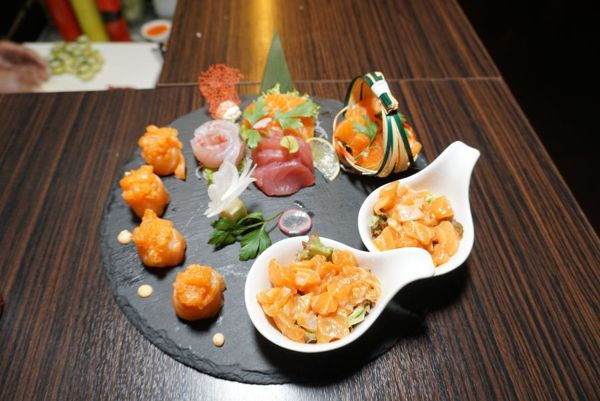

Switchyard
Dashboard
Shoots
Stages
Crew
Gear
Calendar
⚙ Setting
Welcome in, Stage 03
Prep 布景
18%
Shooting 开机
46%
Turnaround 换景
26%
Idle 空场
10%
14
Shoot days
32
Setups
4
Stages live

ROLLING
秋冬菜单静物
Stage 03 · A 组布景 · Day 2/4
灯位方案
机身与镜头
A 机 · 全画幅电影机
35 / 50 / 85 · 备机 ×1
美术与道具
后期交接
Camera hours
6.4 h
开机时长 · 本周日均
↗
July
August 2026
September
Setup readiness
25%
灯位
布景
开机前检查
2/8